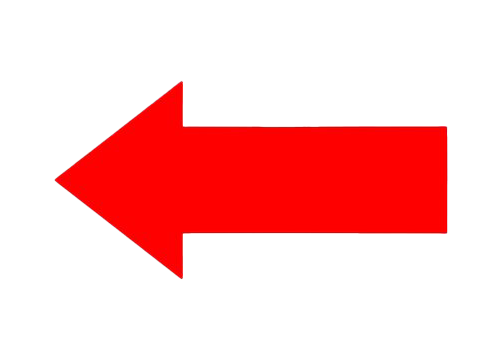
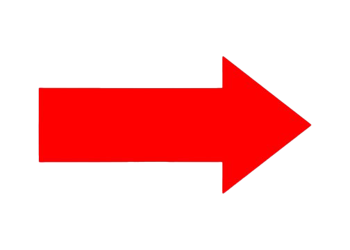

Herzlich Willkommen
Ganz gleich, ob du Anfänger oder Profi bist, wenn du alles über die Binäre Suche wissen möchtest, bist du hier richtig. Du erfährst etwas zur Theorie, hast aber auch Möglichkeiten dein Wissen praktisch anzuwenden.
Beispiele
Ein simpler Einstieg
Bevor es an die Theorie geht, fangen wir erst einmal mit einem Beispiel an. Die folgenden Abbildungen zeigen Schritt für Schritt, wie die binäre Suche vorgeht, um einen gesuchten Wert zu finden.
Wir haben ein Feld (Array) mit 9 Speicherplätzen.
Der Algorithmus schaut sich in jedem Suchdurchlauf (Iteration) den Wert an, der in der Mitte des Arrays steht. In diesem Beispiel wird die Zahl 55 gesucht.

In der Mitte des Arrays ist der Wert 14, dieser ist kleiner als 55.

Das bedeutet, wir brauchen alle anderen Werte, die vor der 14 stehen, nicht zu beachten, da diese Werte kleiner als 55 sind.

Die neue Mitte, im nun reduzierten Array, ist 32.

Die 32 ist kleiner als der gesuchte Wert: 55. Demzufolge muss der gesuchte Wert rechts von 32 liegen.

Es sind nun drei Felder übrig, in denen sich der gesuchte Wert befindet. Die Mitte ist die 45.

Da 45 kleiner als 55 ist, kann der gesuchte Wert nur rechts davon liegen. Zwei Felder sind nun noch übrig

Der verbleibende Bezugswert ist 45. Folglich, liegt der gesuchte Wert 55 rechts davon.

55 wurde gefunden.
Theorie

Wie funktioniert die binäre Suche?
Beispiel, wir suchen in einem Wörterbuch einen bestimmten Begriff. Mit etwas Glück finden wir das Wort auf den ersten Seiten vielleicht erst am Ende oder gar nicht. Das würden wir aber erst auf der letzten Seite feststellen. Auch bei relativ weit vorne liegenden Wörtern (wie z. B. "Binärsuche") müssten wir also ziemlich lange suchen.
Natürlich würde in einem Wörterbuch niemand auf diese Weise suchen. Stattdessen schlagen wir das Buch ungefähr in der Mitte auf, schauen, ob das Wort in der alphabetischen Reihenfolge davor oder danach einzuordnen ist. Wir wissen somit, in welcher Hälfte des Buches sich das gesuchte Wort befindet und können somit den anderen Teil ignorieren. Danach orientieren wir uns wieder in der Mitte des verbelibenden Teils, und schränken somit den Suchbereich erneut um die Hälfte ein. Mit jedem weiteren Suchschritt wird die Anzahl der verbleibenden Seiten wiederrum halbiert. Auf diese Weise kommen wir mit relativ wenigen Suchschritten zur Zielseite und damit zum gesuchten Wort.
Allgemein formuliert benötigt die Binäre Suche drei Schritte:
- Im ersten Schritt vergleichen wir den gesuchten Wert 61 mit dem mittleren Element 36. Der gesuchte Wert ist größer, muss sich also rechts von der 36 befinden.
- Im zweiten Schritt vergleichen wir die 61 mit dem mittleren Element des rechten Bereichs, der 79. Der gesucht Wert ist kleiner, muss sich also links von der 79 befinden.
- Zwischen 36 und 79 befindet sich nur noch ein Element. Auch dieses müssen wir noch einmal mit dem gesuchten Element vergleichen. In diesem Beispiel haben wir das gesuchte Element 61 gefunden. Hier hätte sich aber auch eine andere Zahl zwischen 36 und 79 befinden können. Das hätte bedeutet, dass das Array gar keine 61 enthält.
Pseudocode: Binäre Suche - iterativ
BinarySearch(A[0..N-1], value) {
low = 0
high = N - 1
while (low <= high) {
// invariants: value > A[i] for all i < low
value < A[i] for all i > high
mid = (low + high) / 2
if (A[mid] > value)
high = mid - 1
else if (A[mid] < value)
low = mid + 1
else
return mid
}
return not_found // value would be inserted at index "low"
}
Pseudocode: Binäre Suche - rekursiv
// initially called with low = 0, high = N-1
BinarySearch(A[0..N-1], value, low, high) {
// invariants: value > A[i] for all i < low
value < A[i] for all i > high
if (high < low)
return not_found // value would be inserted at index "low"
mid = (low + high) / 2
if (A[mid] > value)
return BinarySearch(A, value, low, mid-1)
else if (A[mid] < value)
return BinarySearch(A, value, mid+1, high)
else
return mid
}
Simulation

Binäre Suche - Simulator
Nun wird es ein bisschen praktischer. Durch den Binäre Suche - Simulator wird die Binäre Suche visuell dargestellt. Hier kann eine Zahl aus der unten aufgeführten Zahlenreihe im Bereich von 1 bis 100 eingeben werden. Im Anschluss wird durch die binäre Suche überprüft, ob die ausgewählte Zahl in der dargestellten, zufällig erzeugten Zahlenreihe enthalten ist. Die jeweiligen Arbeitsschritte werden über das Aufleuchten eines bestimmten Balkens angezeigt
Probiere es doch gerne einmal aus.
 
Binäre Suche - interaktiv
Hier bist du nun selbst dran! Im interaktiven Teil kannst du nun zeigen, wie gut du die Binäre Suche drauf hast. Deine Aufgabe ist nämlich die vorgegebene Zahl zu finden. Hierfür darfst du allerdings ausschliesslich die Vorgehensweise der Binären Suche verwenden.
Dies tust du indem du die Zahl die als nächster Schritt an der Reihe ist anklickst. Liegst du richtig so wird der Balken grün. Wenn du jedoch falsch liegst, dann färben sich alle Balken rot! In diesem Fall kannst du einfach mit dem dafür vorgesehen Button einen neuen Durchlauf starten. Kommst du schließlich am Ziel an, dann erscheinen alle Balken in Gold.
Nun bleibt nur noch zu sagen, viel Erfolg beim Traineren!
Klicke die Zahl an die im Algorithmus als nächstes dran ist!